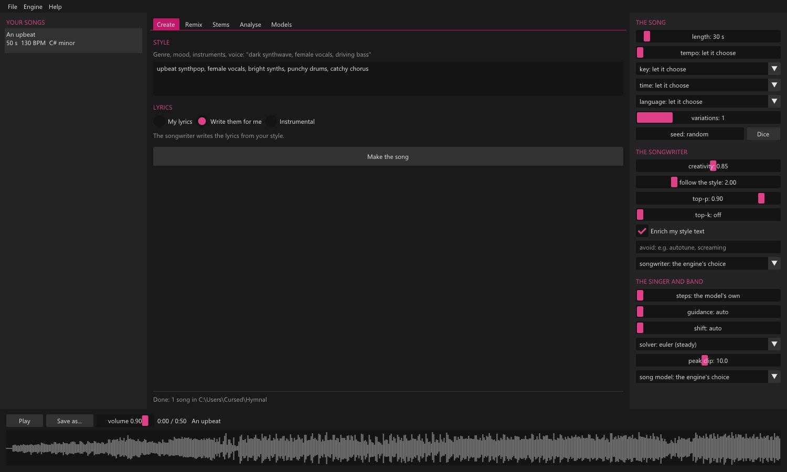
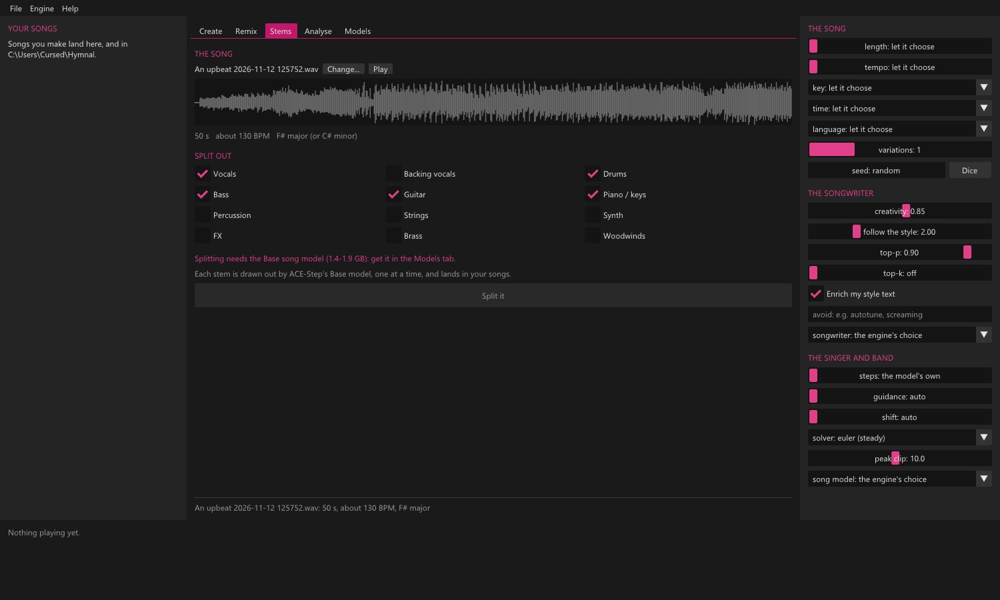

Your first song
Open the Models tab and press Get the starter set once. Then, in Create, describe a style, pick Write them for me and press Make the song. It lands in your songs list, ready to play.
Whole songs, with vocals, made on your own PC. Part of Atelier.


Open the Models tab and press Get the starter set once. Then, in Create, describe a style, pick Write them for me and press Make the song. It lands in your songs list, ready to play.